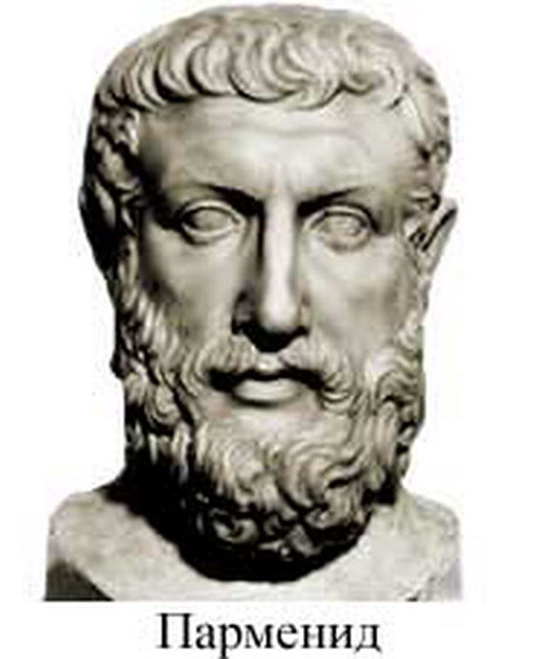

Парменид Элейский (Parmenides) – ок. 540-470 до н.э.

Парменид
Элейский (ок. 540 - 470 до н.э.) - основоположник элейской школы, одна из
ключевых фигур в истории древнегреческой философии и европейской философской
традиции вообще. Он считается другом и учеником Ксенофана, а также учеником
Анаксимандра. Учение Парменида представляет собой первую попытку в
древнегреческой философии изложить метафизическое понимание окружающего мира,
природы. Первым провел принципиальное различие между умопостигаемым, неизменным
и вечным («единым»), бытием (сфера истинного знания) и чувственно воспринимаемой
изменчивостью и преходящей текучестью всех вещей (сфера «мнения»); сформулировал
идею тождества бытия и мышления. Производил мир из огня и ночи, в середину мира
поместил любовь. Первым (возможно, под влиянием Пифагора) высказал мысль о
шарообразности Земли.
Парменид впервые разработал понятие бытия,
играющее одну из главных ролей в категориальном аппарате западной философии на
протяжении всей ее истории. Движение по "пути истины" представляет собой, по
Пармениду, принятие ряда философских утверждений посредством их доказательства
на основе принципа тождества бытия и мышления ("мыслить и быть одно и то же") -
реально лишь то, что мыслимо, а то, что немыслимо, не существует. В частности,
утверждает Парменид, небытия не существует, ибо оно немыслимо и невыразимо.
Бытие же есть и наделяется рядом характеристик, представляющих собой в основном
следствия из отрицания небытия: бытие не возникает и не исчезает, оно непрерывно
и однородно, оставаясь себетождественным, оно ни в чем не нуждается и
представляет собой совершенную сферу.
Из сказанного видно,
насколько сильна струя рационализма в философии Пармениды. По его мнению, мысль
- это мысль о предмете. Мышление нельзя отделить от бытия даже тогда, когда мы
думаем о небытии. Но для Парменида по сути небытия нет, так как небытие -это
пустота, пустое пространство, значит, если нет небытия, то и нет пустого
пространства, все заполнено веществом. Отсюда вытекает следующий вывод: если
весь мир, все пространство заполнено веществом, то не существует никакого
множества вещей, так как между вещами нет пустых промежутков, которые отделяли
бы одну вещь от другой. Это учение своим острием направлено против Пифагора,
который постулировал наличие в мире пустоты (т.е. воздуха).
Парменид автор философской поэмы «О природе», сохранившейся фрагментарно, в
которой он впервые в истории европейской философии сделал предметом рефлексии
понятие «бытия». Поэма состоит из трех частей. В первой части, вступлении,
описано восхождение автора на колеснице ко «вратам дня и ночи», где богиня
Правды Дике возвещает ему «путь истины и мнения смертных», составляющие
соответственно вторую и третью части поэмы. Таким образом, содержание поэмы
представляет собой речь богини, которую юный автор, посвященный в истинное
знание, лишь пересказывает, но не «сочиняет» от себя.
Учение
Парменида оказало большое влияние на развитие последующей античной философии
(прежде всего, на Платона).
Парменид Элейский и его заочная дискуссия с Гераклитом